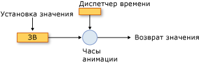
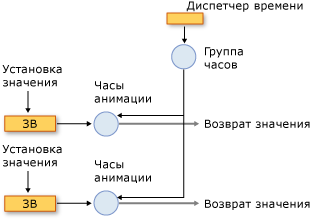
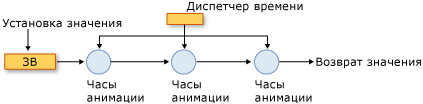

Общие сведения об анимации и системе управления временем
В этом разделе описывается, как система управления временем использует анимацию, Timeline, и Clock классы для анимации свойств.
Предварительные требования
Чтобы понять содержимое этого раздела, необходимо знать, как использовать анимацию WPF для анимации свойств, как описано в разделе Общие сведения об эффектах анимации. В нем также можно ознакомиться со свойствами зависимостей. Дополнительные сведения см. в разделе Общие сведения о свойствах зависимостей.
Временные шкалы и часы
Общие сведения об анимации описано как Timeline представляет сегмент времени и анимации — это разновидность Timeline , формирующий значения выходных данных. Сама по себе Timeline, не выполняет никаких действий кроме описания сегмента времени. Он является временной шкалы Clock объект, который не работает. Аналогичным образом, анимация не выполняет анимирования фактически свойства: класс анимации описывает способ вычисления выходные значения, но это Clock , созданных для данной анимации, анимацию и применяет его к свойствам.
Объект Clock — это специальный тип объекта, который поддерживает состояние времени для выполнения Timeline. Он предоставляет три бита информации, которые необходимы для анимации и системы: CurrentTime, CurrentProgress, и CurrentState. Объект Clock определяет его текущее время, ход выполнения и состояние с помощью поведения времени, описываемого его Timeline: Duration, RepeatBehavior, AutoReverse, и т. д.
В большинстве случаев Clock создается автоматически для временной шкалы. При анимации с помощью Storyboard или BeginAnimation метод, часы автоматически создаются для временной шкалы и анимации и применить к их целевым свойствам. Вы также можете создать Clock явным образом с помощью CreateClock метод вашей Timeline. MediaTimeline.CreateClock Метод создает часы соответствующего типа для Timeline на котором он вызывается. Если Timeline содержит дочерние временные шкалы, он создает Clock объекты для них. Полученный в результате Clock объекты упорядочиваются в деревья, которые соответствуют структуре Timeline дерева объектов, из которой они созданы.
Существует различных типа часов для различных типов шкал времени. В следующей таблице показаны Clock типы, которые соответствуют некоторым другим Timeline типов.
| Тип временной шкалы | Тип часов | Назначение часов |
|---|---|---|
| Анимация (наследует от AnimationTimeline) | AnimationClock | Создает выходные значения для свойства зависимостей. |
| MediaTimeline | MediaClock | Обрабатывает файл мультимедиа. |
| ParallelTimeline | ClockGroup | Группирует и управляет дочерними Clock объектов |
| Storyboard | ClockGroup | Группирует и управляет дочерними Clock объектов |
Можно применить любой AnimationClock создаваемых к совместимым свойствам зависимостей с помощью объектов ApplyAnimationClock метод.
В сценариях с высокой нагрузкой, например при анимации большого количества сходных объектов, управление использованием Clock использования может дать выигрыш в производительности.
Часы и диспетчер времени
При анимации объектов в WPF, это время диспетчер, который управляет Clock объектами, созданными для временных шкал. Диспетчер времени — это корень дерева объектов Clock, который управляет потоком времени в этом дереве. Диспетчер времени создается автоматически для каждого приложения WPF и остается невидимым для разработчика приложения. Диспетчер времени "тикает" много раз в секунду; фактическое число тактов, возникающих каждую секунду, зависит от доступных системных ресурсов. Во время каждой из этих тактов диспетчер времени вычисляет состояние всех Active Clock объектов в дереве расчета времени.
На следующем рисунке показано отношение между диспетчером времени и AnimationClock, а также анимированными свойствами зависимостей.

Анимирование свойства
Когда диспетчер времени "тикает", он обновляет время каждого Active Clock в приложении. Если Clock — AnimationClock, он использует GetCurrentValue метод AnimationTimeline из которого он был создан для расчета его текущего выходного значения. AnimationClock Предоставляет AnimationTimeline с текущее местное время, входное значение, которое обычно является базовым значением свойства и конечное значение по умолчанию. После получения значения анимированного свойства с помощью GetValue метода или метода доступа CLR, вы получите выходные данные его AnimationClock.
Группы часов
Выше описаны различные типы Clock объектов для различных типов шкал времени. На следующем рисунке показано отношение между диспетчером времени ClockGroup, AnimationClock, а также анимированными свойствами зависимостей. Объект ClockGroup создается для временных шкал, которые группируют другие временные шкалы, такие как Storyboard класс, который группирует анимации и другие временные шкалы.

ClockGroup
Композиция
Можно связать несколько часов с одним свойством. При этом каждые часы используют выходное значение предыдущих часов в качестве своего базового значения. На следующем рисунке показаны три AnimationClock объекты, которые применены к тому же свойству. Clock1 использует базовое значение анимируемого свойства в качестве входных данных и для создания выходных данных. Clock2 принимает выходные данные от Clock1 в качестве входных данных и использует их для создания выходных данных. Clock3 принимает выходные данные от Clock2 в качестве входных данных и использует их для создания выходных данных. Когда несколько часов влияют на одно и то же свойство одновременно, считается, что они находятся в цепочке композиции.

Цепочка композиции
Обратите внимание, что, несмотря на то, что связь создается между входными и выходными из AnimationClock объекты в цепочке композиции, их поведение времени не меняется. Clock объекты (включая AnimationClock объекты) имеют иерархическую зависимость от их родительских Clock объектов.
Чтобы применить несколько часов к тому же свойству, используйте Compose HandoffBehavior при применении Storyboard, анимации, или AnimationClock.
Такты и объединение событий
В дополнение к расчету выходных значений тикающий диспетчер времени выполняет и другие операции: он определяет состояние всех часов и вызывает соответствующие события.
Хотя такты меняются часто, между ними может возникать множество событий. Например Clock может остановлен, запущен и остановлен снова в таком случае его CurrentState значение будет изменено три раза. В теории CurrentStateInvalidated событие может вызываться несколько раз в одном такте; Однако механизм времени объединяет события, позволяя CurrentStateInvalidated событие может вызываться не более одного раза за такт. Это справедливо для всех временных событий: не более одного события каждого типа вызывается для заданного Clock объекта.
При Clock изменяет состояние и возвращается обратно в исходное состояние между тактами (например после изменения Active для Stopped и вернуться к Active), по-прежнему возникновении связанного события.
Дополнительные сведения о временных событиях см. в разделе Общие сведения о временных событиях.
Текущие и базовые значения свойств
Анимированное свойство может иметь два значения: базовое значение и текущее. При задании свойства с помощью метода доступа CLR или SetValue метод, устанавливается его базовое значение. Если свойство не анимировано, его базовое и текущее значения совпадают.
При анимации свойства, AnimationClock задает свойства текущей значение. Получение значения свойства посредством метода доступа CLR или GetValue метод возвращает выходные данные AnimationClock при AnimationClock — Active или Filling. Базовое значение этого свойства можно получить с помощью GetAnimationBaseValue метод.